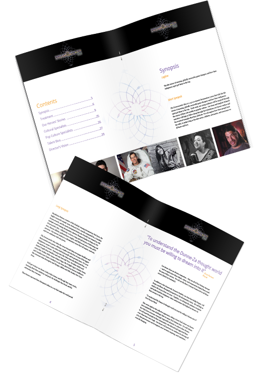

<div id="custom-content" class="white-popup" >
 
  <div class="row">
  <div class="col-md-7">

 </div>


 <div class="bottom-align-text col-md-5">
  <h2>Dreamcatcher Bios Proposal</h2>
  
 <p>This was a multipage proposal I designed for a film and television company. This document was used to procure funding for a 30 minute long documentary television series. The document had to be designed in such a way that the reader could get a sense of what the series was about even if they weren’t reading the full text. This was achieved through careful use of typographical hierarchy, deliberate choice of colours and thoughtful image placement.    
</p>
 </div>
 </div>